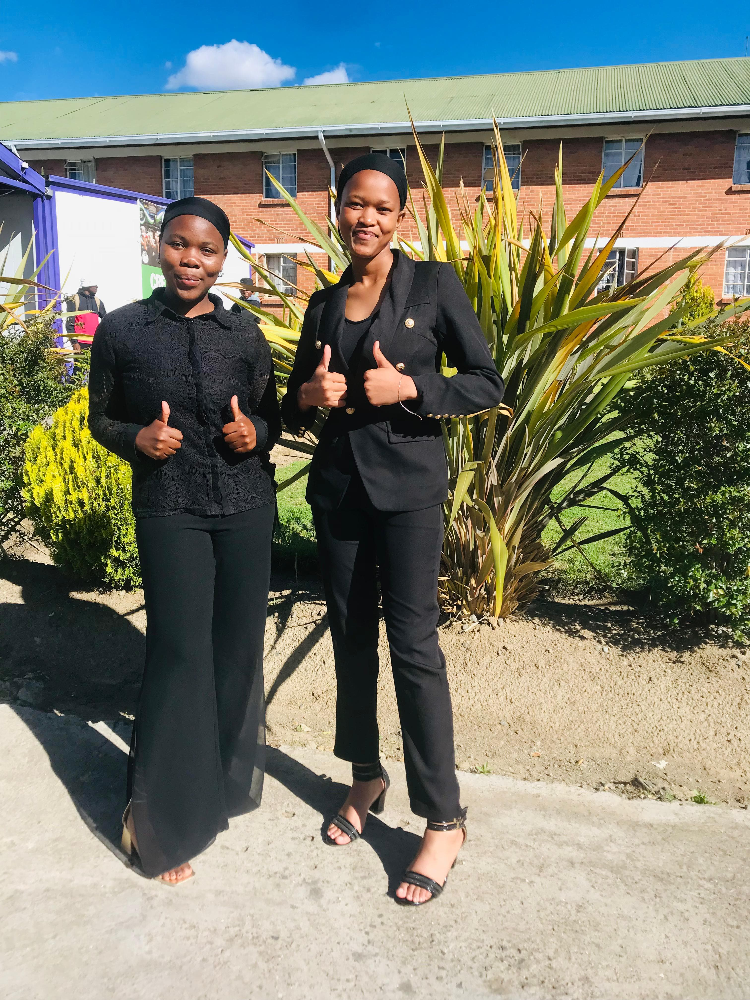

we are currently the second-year students specializing in Broadcasting in Radio and Television. our passion for storytelling drives our work, and over the past few years, we have honed our skills in video production and editing, as well as audio engineering. We enjoy capturing compelling narratives on camera and transforming them through thoughtful editing to engage audiences. Our experience with various editing software and techniques allows us to create polished final products, whether for radio broadcasts or video content. We are excited to continue developing our skills and exploring new creative avenues in the world of media.
